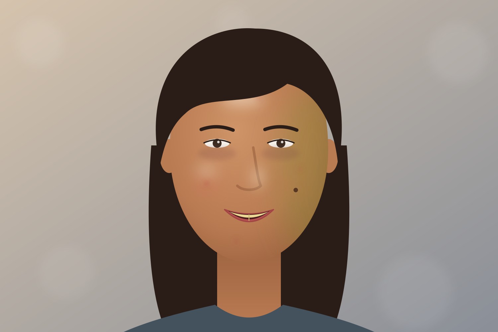

Portraits
2026-10-04 · 7 photos
Before
Before and after (\)
Crop
Crop (C)
Nodes
Nodes (N)
Add photos
Add photos (⌘O)
Fit 28%
Zoom (Z toggles Fit and 100%, F full screen)
Neural · 42 ms · Display P3
Update ready
Export 3
⌘E

Signature · 100%
Sony A1 · A1M02214 · ISO 200 · 1/250 · f/2.0
Add node
Bypass
Bypass this node (B)
Delete
2 of 7
Show mask
Show mask (M)
Expand
Give the graph most of the height
Input
Main
01
Warmth
02
Output
100%
Fit
Corrector
Grades all or part of the photo.
Film
Models a colour negative, a print and a scan.
Skin
Retouches the skin of each face.
Parallel
Grade branches side by side.
Layer
Blend one branch over another.
Splitter and combiner
Split a picture, then join it again.
Node view only.
Skin is not in the simple view (the owner, 2026-11-11).